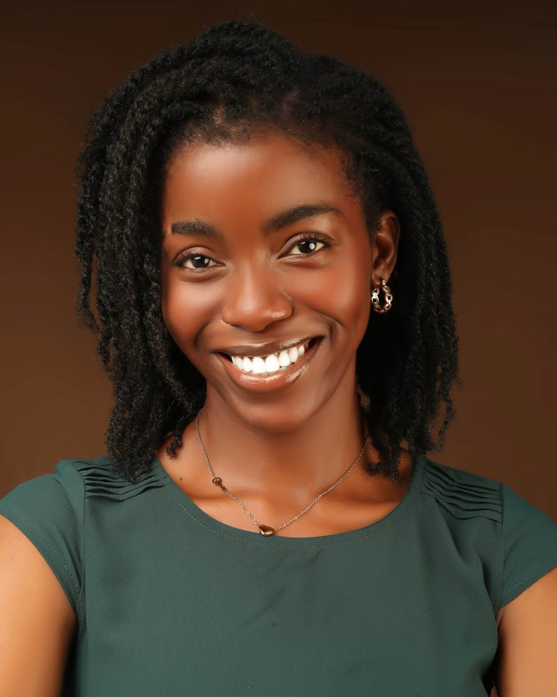
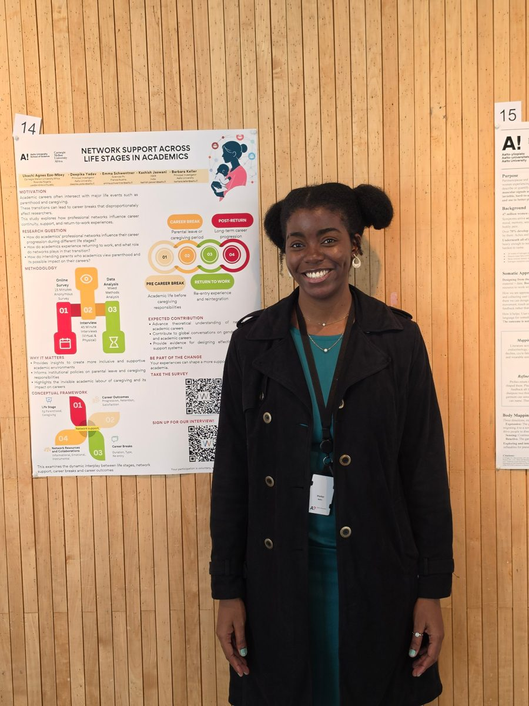
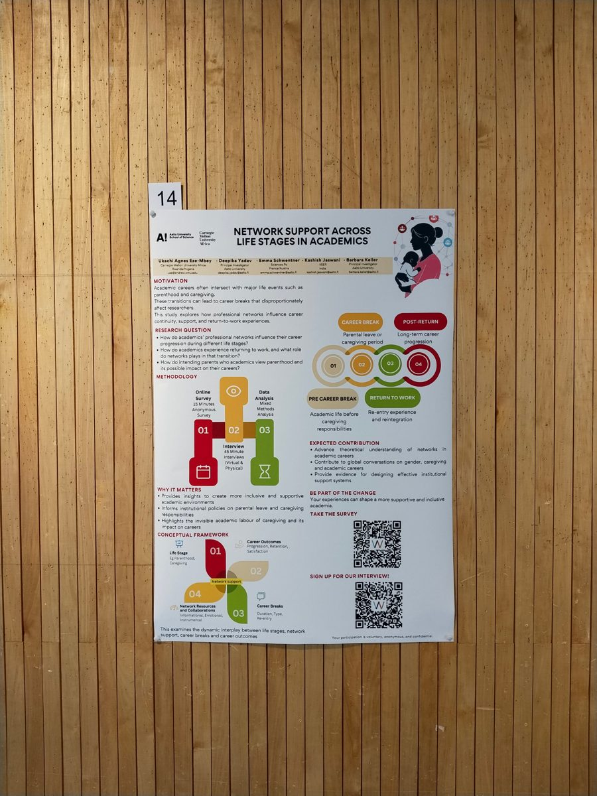
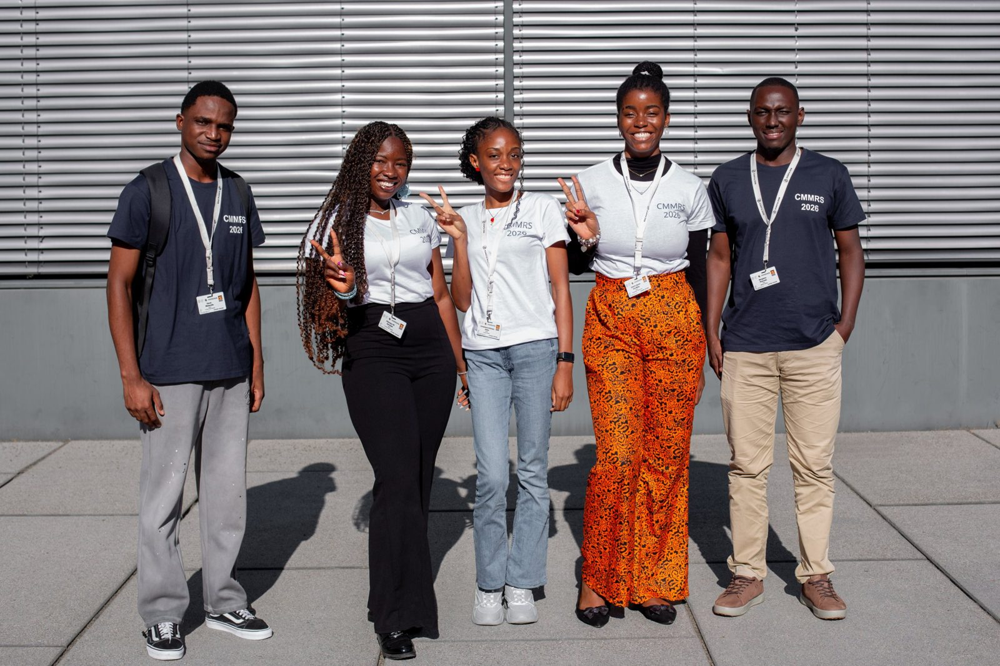
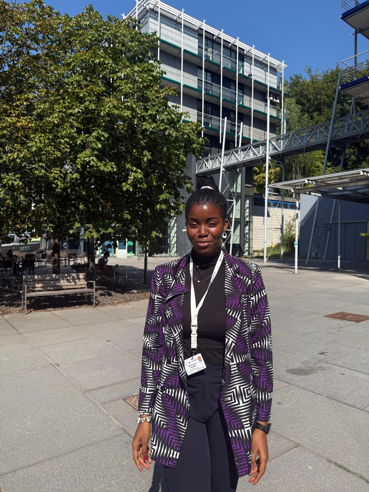
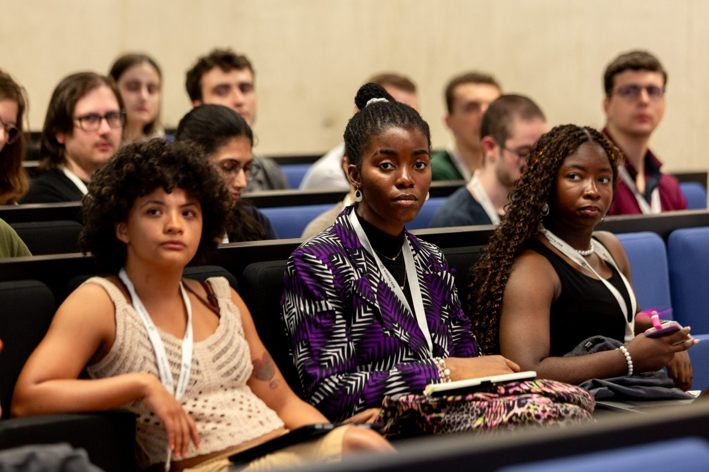
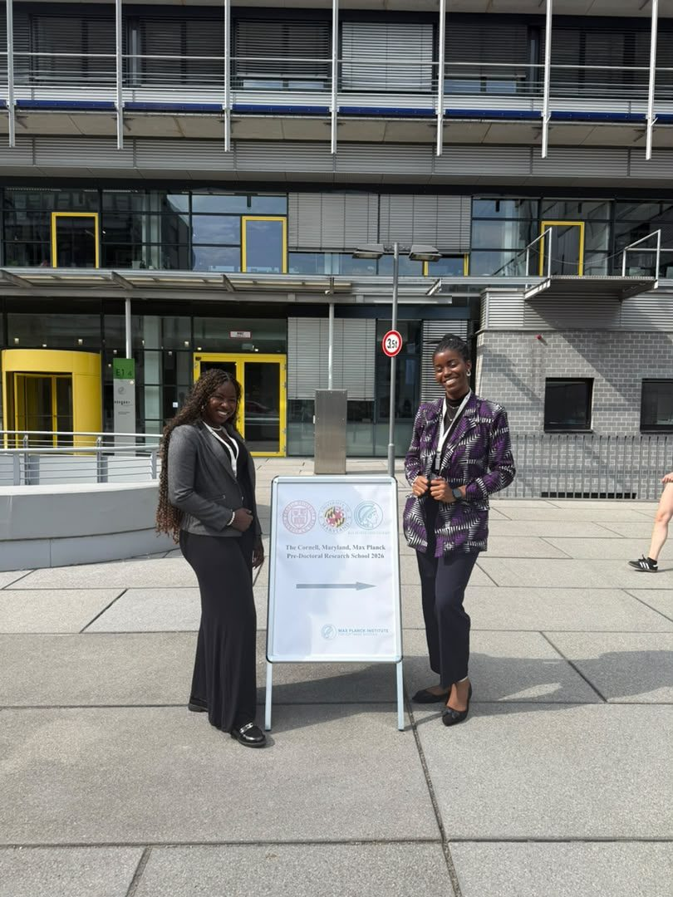

Researcher · Carnegie Mellon University Africa · Kigali
My work sits between computing education, human–computer interaction and language technology. I use qualitative and mixed methods to understand the people behind the systems: learners, EdTech professionals, dataset contributors and communities going through technological change.

I am completing an MSc at Carnegie Mellon University Africa in Kigali, Rwanda, where I work as a researcher and serve as a teaching assistant for 04-641, Fundamentals of Telecommunications and Computer Networks. I trained first as an engineer, with a BSc in Electronic and Electrical Engineering from Obafemi Awolowo University, Nigeria.
Before CMU-Africa I was a researcher at Data Science Nigeria, and I spent a summer at Aalto University in Finland as a research assistant through the ASCI research program. Outside research I run a small startup, lead a team of nine as Academic and Research Minister at CMU-Africa, and create content on YouTube.
I am preparing to begin a PhD in AI in education and computing education research, and I am interested in labs that study how learners and educators in under-represented regions adopt and shape AI tools.
A qualitative, contributor-centred survey study of how Nigerian language audio datasets are built, comparing independent contributors with institutionally funded ones.
How professional networks shape career progression for academics through parenthood and caregiving, career breaks, and the return to work. The study combines a 15-minute anonymous survey with 45-minute interviews, analysed with mixed methods.
Reflexive thematic analysis of about 290 reflections written by EdTech professionals in seven African countries during a three-course GenAI upskilling series.
A mixed-methods study of the socio-technical challenges of Africa's e-mobility transition, using Rwanda as the case, and of how affected groups navigate them.
MSIT practicum with Intron. Our team is building a multidomain spoken QA system for Yoruba, Nigerian Pidgin, Igbo, Kinyarwanda and Swahili, covering health, finance, telecoms, education and law. I am project manager and client liaison, and I build the domain classifiers for Nigerian Pidgin and Igbo text data.
04-641 Fundamentals of Telecommunications and Computer Networks.
Lead a team of nine supporting academic and research life for students at Carnegie Mellon University Africa.
Summer research placement through the ASCI research program. Presented a poster on network support across life stages in academics.
The Cornell, Maryland, Max Planck Pre-Doctoral Research School, hosted at the Max Planck Institute for Software Systems.
Learning Science for Innovators (LSFI), a Mastercard-funded EdTech project. Applied HCI, learning science and UX research, including qualitative analysis of longitudinal student feedback on educational platforms.
Research in Nigeria's AI and data science community.
Kigali, Rwanda.
Ile-Ife, Nigeria.
Aalto University Espoo, Finland · 2026


CMMRS 2026 Max Planck Institute for Software Systems, Germany



